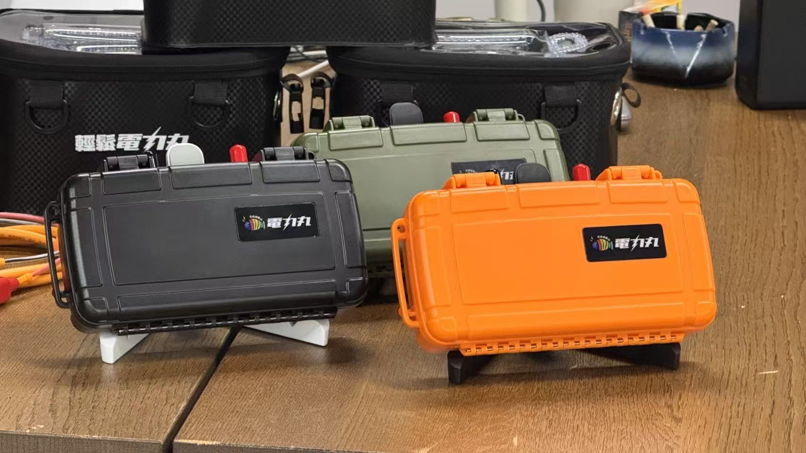

想定用途
船釣り・深場の電動リール運用をより身軽に
従来の重いバッテリー構成よりも、移動しやすく、取り回ししやすい 電源セットを求めるユーザー向けの構成です。長時間の釣行でも、 残量確認をしながら運用しやすい点が特長です。
- 船上で持ち運びしやすい軽量設計
- 電動リール電源をすっきりまとめやすい
- 初回導入時から使いやすい同梱構成
 電動リール向けポータブル電源
製品資料
電動リール向けポータブル電源
製品資料
日本語ページ
Reel Mate は、DAIWA / SHIMANO 系の一般的な電動リール用途を想定した 20Ah のポータブル リチウムイオンバッテリーです。船上で持ち運びしやすく、 残量表示を確認しながら使えることを重視しています。
製品ハイライト
Reel Mateは、船上での移動性と取り回しやすさを重視した 電動リール向けポータブル電源です。電池残量を見ながら使え、 深場や長時間釣行でも運用しやすい構成を目指しています。
想定用途
従来の重いバッテリー構成よりも、移動しやすく、取り回ししやすい 電源セットを求めるユーザー向けの構成です。長時間の釣行でも、 残量確認をしながら運用しやすい点が特長です。
購入前の確認
Reel Mate は一般的な電動リール用途を想定しています。 基本的には必要な電圧条件が合っていれば使用できるため、 購入前には電圧と配送先を確認してから進めるのが安心です。
主な特長

約1.64 - 1.65kg。重い据え置き型バッテリー構成より身軽に運用しやすい設計です。

長時間の釣行中でも、残りの電力をひと目で確認しやすくなっています。

過充電、過放電、短絡、逆接続、温度上昇などへの保護を想定した構成です。

バッテリー、保護ケース、適合充電器、線材、説明書を同梱した、すぐ使いやすい構成です。

ポイント移動や立ち位置変更の多い釣りでも、持ち運びしやすさを重視しています。

カラー展開やOEM / ODM、販売店向けの相談にも対応できます。
適合確認
Reel Mate は、一般的な DAIWA / SHIMANO 系の電動リール用途を想定しています。 基本的には必要な電圧条件が合っていれば使用できるため、 注文前には型番と電圧、配送先を共有いただくのがスムーズです。
基本仕様
| モデル | RP21-1420 |
|---|---|
| バッテリー容量 | 20Ah |
| エネルギー | 296Wh |
| 定格出力 | DC 14.8V |
| 満充電電圧 | DC 16.8V ± 0.2V |
| サイズ | 約 220 x 130 x 52 mm |
| 重量 | 約 1.64 - 1.65kg |
| 動作温度 | 0 - 60°C |
| 充電温度 | 0 - 55°C |
| 防塵防滴 | IP65 |
| 保証 | 1年間 |
付属品と充電器
Reel Mate はバッテリー単体ではなく、初回導入しやすいフルキット構成で案内しています。 余計な組み合わせ確認を減らし、受け取り後すぐに準備しやすい内容です。
安心材料
同梱の充電器はバッテリー構成に合わせたもので、100-240V 入力に対応します。 充電器に関する資料が必要な場合は、支払い前の問い合わせ時に案内できます。
注文の流れ
現在は購入前に適合や配送条件を確認しやすいよう、 シンプルな直販フローで案内しています。
価格と構成
Reel Mateフルキットの現在の直販価格は 699米ドル です。 支払い前に、配送先、支払い方法、電圧条件を確認できます。
よくある質問
一般的な DAIWA / SHIMANO 系の電動リール用途を想定しています。 基本的には、必要な電圧条件が合っていれば使用できます。
バッテリー、保護ケース、適合充電器、線材、説明書が含まれます。
付属の充電器はバッテリー構成に合わせたもので、100-240V 入力に対応します。 充電器に関する資料は、支払い前に希望があれば案内可能です。
IP65相当の防塵防滴性能を想定していますが、水没や直接洗浄は推奨していません。
可能です。リール型番、使用予定、配送先を共有いただければ、購入前に確認案内します。 日本語サポートは 24 時間以内の返信を目標にしています。
通常の想定用途に対して 1 年間の保証案内があります。保証相談を受けた後は、 72 時間以内の返信と初期判断を目標にしています。
修理が必要な場合は、案内された現地の修理受付先へ製品を発送いただきます。 修理フロー開始後は、通常 1 週間以内の返送手配を目標にしています。